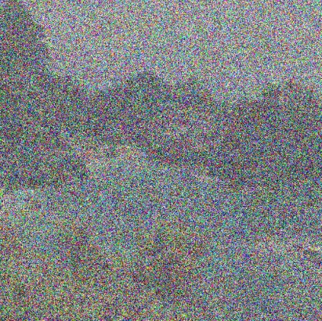
CS 180 · Project 3
Fun with Flow Models
Part A: Exploring the Power of Flow ModelsPart B: Flow Matching from Scratch!
All images can be clicked on to view them in full resolution
Overview
This project explores going from random noise to a data distribution (in this case natural images) using a learned network. Specifically I look at flow matching which effectively tries to learn a velocity field from source noise to my desired data distribution which in this case is images.
Part A: Exploring the Power of Flow Models
1. Visualizing Training and Sampling
I linearly interpolate between noise and data by sampling noise from a zero-mean, unit-variance Gaussian, obtaining some clean image , and then constructing my linearly interpolated image as
where is between 0 and 1. At train time, I sample a clean image, some noise, and from a uniform distribution and construct . The model is then conditioned on the constructed , sampled , and desired conditioning. The model is then tasked with predicting the velocity from noise to data () and is trained with the objective
1.1 Constructing Noisy Training Inputs
Here are some linearly interpolated images between noise and data.

1.2 Classical Denoising
Here I use vanilla Gaussian blur as a low-pass filter to remove the noise in my image (I don’t apply the blur directly on but rather on to preserve the amplitude).
t = 0.25
t = 0.50
t = 0.75
Noisy input
Gaussian blur
Best σ at t = 0.25 8t = 0.50 4t = 0.75 1
1.3 One-Step Denoising
Here I use a pretrained flow model to predict the velocity at varying ’s and follow the path directly to along that predicted velocity in one step. Specifically, this is formulated as , where is the predicted one-step generation, is the interpolated noisy image, and then is the model that outputs velocity.
Original
Noisy input
One-step estimate
t = 0.25
 t = 0.50
t = 0.50

 t = 0.75
t = 0.75
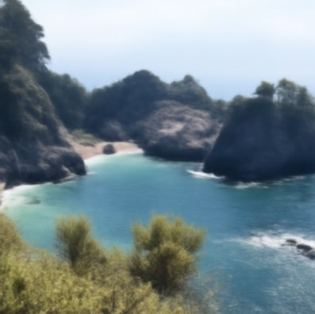
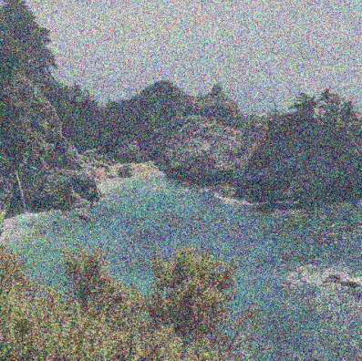
1.4 Visualizing Velocity
Here I visualize the predicted velocity the network outputs when tasked with denoising input images at varying noise levels. I show it as the update that the model adds to to estimate the clean image, next to the ground-truth update .
Noisy xt
Predicted (1−t)v̂t
Ground truth (1−t)vgt
Error (RGB RMS)
t = 0.25
t = 0.50
t = 0.75
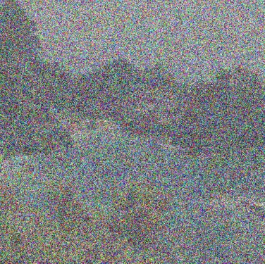
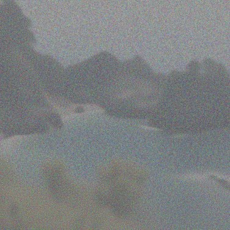
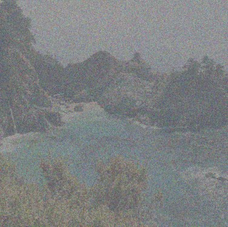
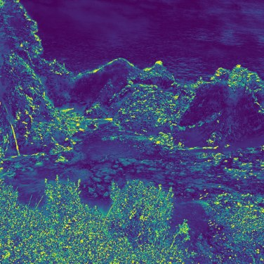
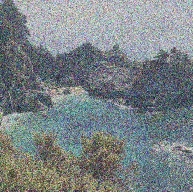
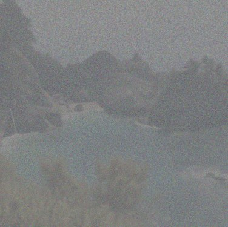
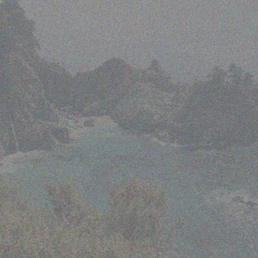
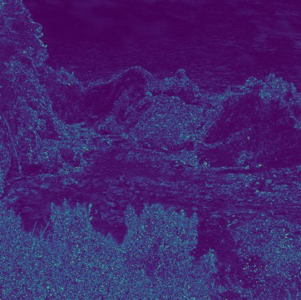
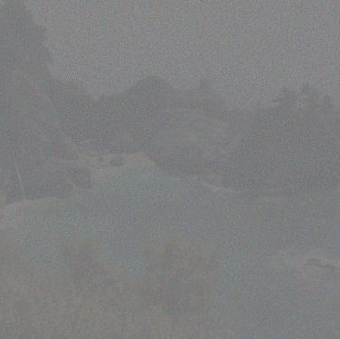
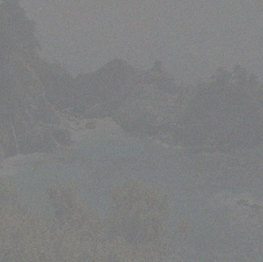
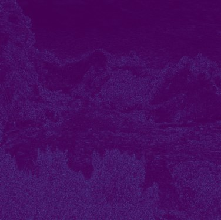
We can see from this result that the more input noise there is, the higher the error between the ground-truth velocity and the predicted velocity. Also, an interesting observation is that the noisier the image is, the more high-frequency details we lose.
1.5 Iterative Denoising with Euler Sampling
Instead of doing one-step denoising, I can predict the velocity at a point, move a small amount in that direction, and then predict the velocity at the slightly denoised image. I repeat this until . This process is called Euler integration and can be formulated as
Compared to one-step denoising, where I multiply the velocity by , I multiply by a fixed delta .

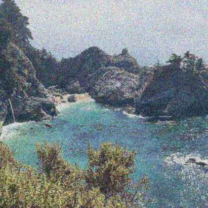
Comparison

| Method | MSE vs. original |
|---|---|
| Gaussian blur | 0.0478 |
| One-step | 0.0267 |
| Euler | 0.0335 |
All three start from the t = 0.50 noisy input. MSE is averaged over every pixel and RGB channel, with pixel values in [−1, 1].
The Gaussian blur denoising method reduces the “noisiness” of the image but leaves artifacts of the noise as well as also destroying high-frequency details. Since the model generating velocities was trained with an L2-based objective, the one-step estimate approximates the mean, which averages over all plausible clean images and causes some smoothing, which discards some detail (notably the dark structures in the water). This also explains why the one-step estimate has a smaller MSE even though the iterative Euler-based denoising qualitatively looks much closer to the original image.
1.6 Generating Images from Noise
Prompt “a high quality photo”Input Pure Gaussian noise
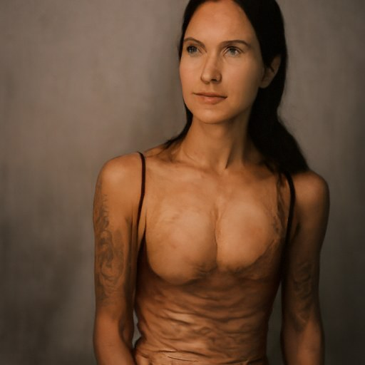
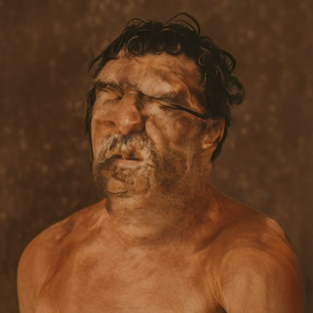
Using the prompt “a high quality photo” generates portrait-style images of people against plain backgrounds. Vanilla flow matching without classifier-free guidance produces images that are deformed/weird. Samples 1, 2, and 4 have strange artifacts, and samples 3 and 5 are more plausible generations but still have some structural issues.
2. Conditional Generation and Guidance
2.1 Classifier-Free Guidance
CFG helps with the quality of generations by artificially pushing the model’s predictions away from what it would predict without the prompt. At each sampling step, I first compute a conditional velocity (with the prompt) and an unconditional velocity (with the empty prompt), both at the same and . I then push the conditional velocity further away from the unconditional one by adding times their difference.
velocity with the prompt velocity with the empty prompt “” = 7
Prompt “a high quality photo”
Sample 1
Sample 2
Sample 3
Sample 4
Sample 5
No CFG
CFG
Using classifier-free guidance, we can significantly improve the quality of the generations, but we seem to suffer some mode collapse, as all of the images are even more homogeneous than before.
3. Creative Applications
3.1 Image-to-Image Editing
I take an input image and noise it at varying levels, then I provide the model with the text conditioning “a high quality photo” and then run the Euler sampling process with classifier-free guidance () to get a generation. Sampling starts at the noised image’s time rather than from pure noise and runs to , so each label below is that starting time; smaller means more noise.
Prompt “a high quality photo”
Campanile
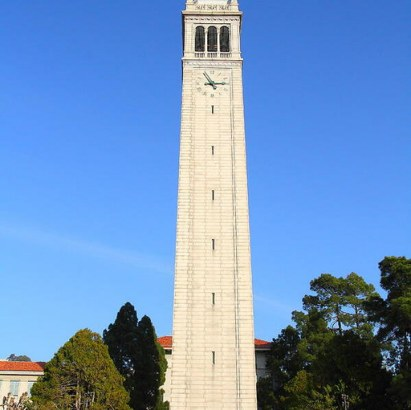
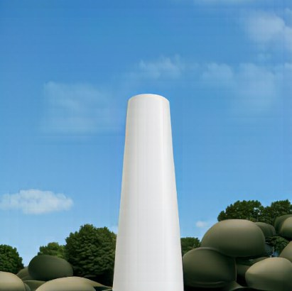
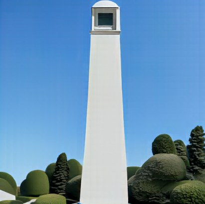
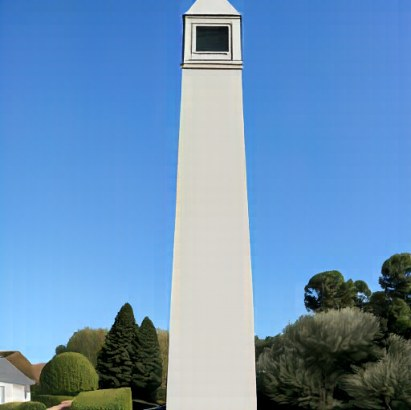
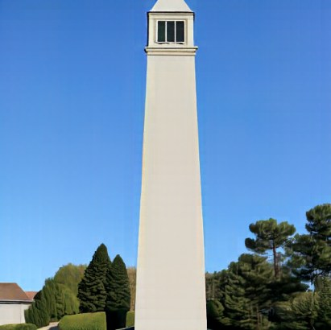
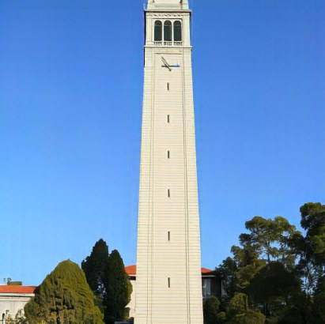
McWay Falls
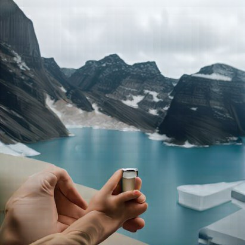
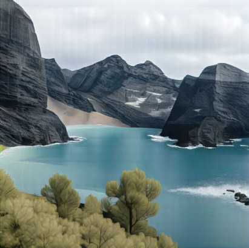
A Succulent
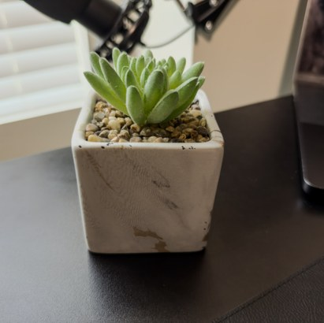
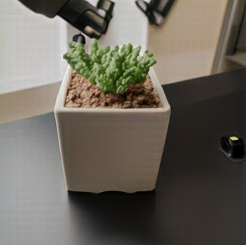
Tea Cup
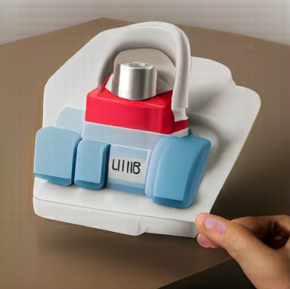
Original painting: Will Kemp Art School (willkempartschool.com).
Hand-drawn
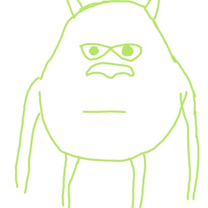
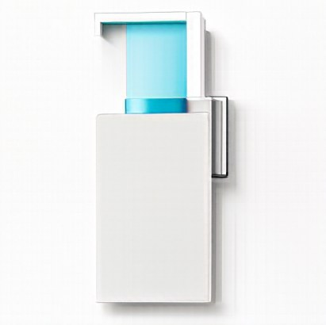
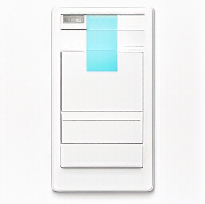
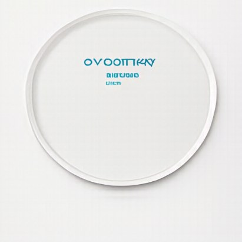
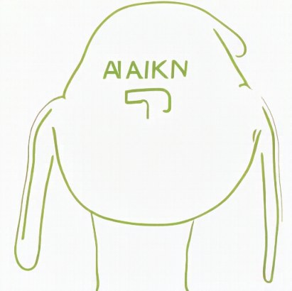
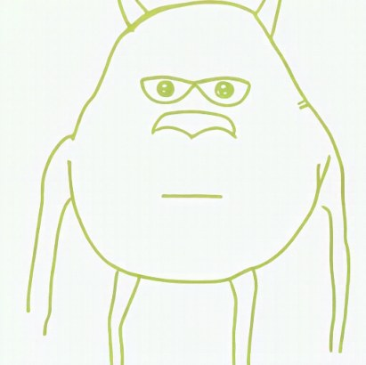
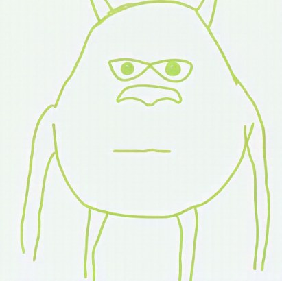
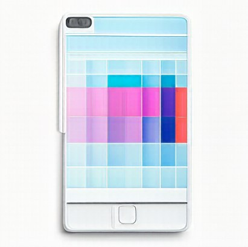
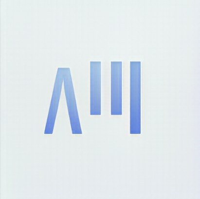
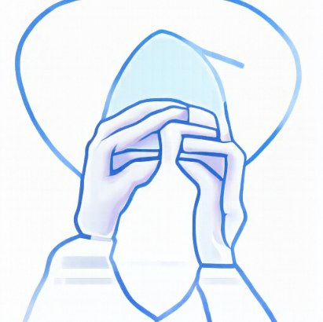
3.2 Text-Guided Image Editing
I do the same process as 3.1, but instead of using the generic prompt of “a high quality photo”, I use desired prompts to edit the source image.
Campanile
Prompt “eiffel tower”
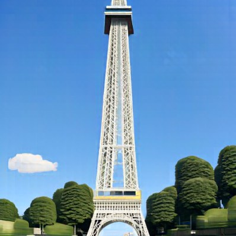
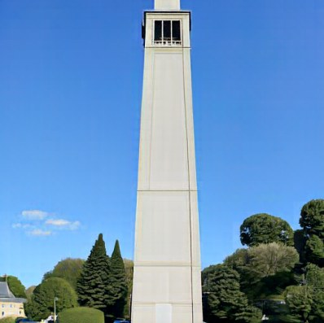
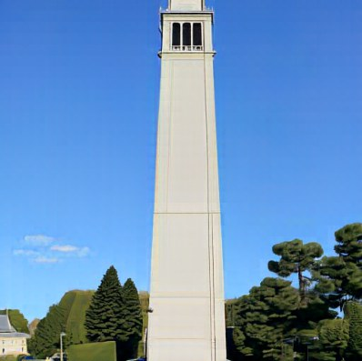
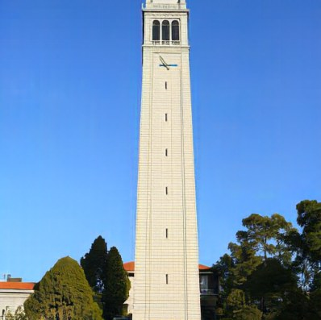
McWay Falls
Prompt “van gogh painting of a waterfall”
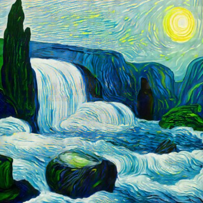
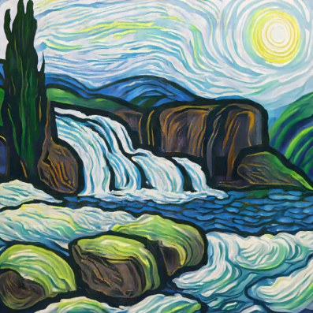
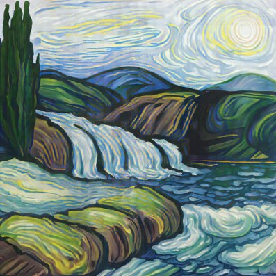
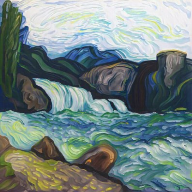
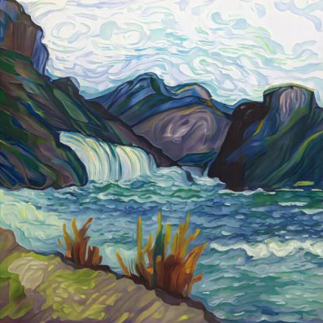
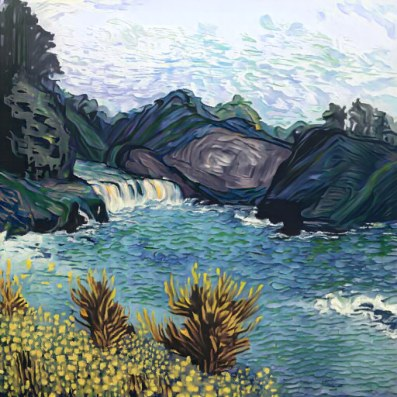
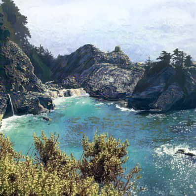
A Succulent
Prompt “venus fly trap”
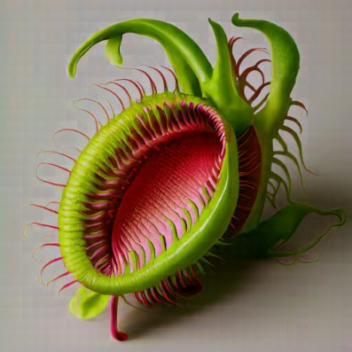
3.3 Visual Anagrams
I want to make generations that are anagrams. Right-side up, the image will reveal something, and then upside down, the image will reveal something else. To do this, I augment the velocity. I first compute two velocities , as
and then the final velocity I use is calculated as
Hover or focus an image to turn it upside down.
Both orientations
3.4 Hybrid Images
For generating hybrid images that look like one image up close and another image from far away, I employ a similar trick as the anagrams by modifying the velocity. Here I calculate velocities for each of my prompts, and , as
Then I pass through a low-pass filter (which will express when we are far away) and pass through a high-pass filter (which will express when we are close up). The final velocity is
where the filters are implemented as
The distant view is not a model output: the hybrid was downsampled to 32 × 32 px, keeping only its low frequencies, then upsampled back to 512 × 512 so it can be seen at full size. The small copy is the unaltered hybrid shown at 48 px.
Low-pass σ 16
Part B: Flow Matching from Scratch!
1. Training a Single-Step Denoising UNet
1.1 Implementing the UNet
- ConvB
- ConvBlock: (Conv 3×3 → BatchNorm → GELU) × 2
- DownB
- DownBlock: Conv 3×3, stride 2 → BatchNorm → GELU → ConvB
- UpB
- UpBlock: ConvTranspose 4×4, stride 2 → BatchNorm → GELU → ConvB
- Flatten
- AvgPool 7×7 → GELU
- Unflatten
- ConvTranspose 7×7, stride 7 → BatchNorm → GELU
- Conv 3×3
- Conv 3×3, 128 → 1 channel
- Skip
- Copy the encoder tensor and concatenate along channels (grey slab)
Front face: spatial size. Depth: channels. Hidden width D = 128; no time or class conditioning.
1.2 Training a Single-Step Denoiser
I aim to train a model to go from a noised image to a clean image . My loss is
To construct , I do
where .
Noising process
σ = 0.0σ = 0.2σ = 0.4σ = 0.5σ = 0.6σ = 0.8σ = 1.0
1.2.1 Training
I use the architecture described above to denoise MNIST digits. Below are results on unseen test digits at the first and last epoch.
Training loss (σ = 0.5)
Test-set results
The first epoch is able to recover global structure of the digit with some residual noise, and then at the last epoch it resolves the fine details.
1.2.2 Out-of-Distribution Testing
I use the checkpoint from 1.2.1 and then test it on differing levels of noise (the network was only trained with ).
Rows, top to bottom: σ = 0.0, 0.2, 0.4, 0.5, 0.6, 0.8, 1.0.
As you can see, the network is easily able to denoise images with less noise than 0.5 but struggles significantly with higher noise levels than 0.5.
1.2.3 Denoising Pure Noise
Here I am training the network to go from pure noise to some output class image. Since I am using an L2-based loss, the network is encouraged to essentially output the average image of all the classes, which is what we see in the generations.
Rows, top to bottom: pure-noise input, denoised output.
2. Training a Flow Matching Model
2.1 Adding Time Conditioning to UNet
I modify my original UNet architecture to condition on how noisy the noised image is with . The network uses fully connected blocks (FCBs) to map to one scale per channel: 1 → 128 for the 128×7×7 Unflatten output and 1 → 64 for the 64×14×14 output of the first UpBlock. Each is multiplied in before the skip connection is concatenated.
- ConvB
- ConvBlock: (Conv 3×3 → BatchNorm → GELU) × 2
- DownB
- DownBlock: Conv 3×3, stride 2 → BatchNorm → GELU → ConvB
- UpB
- UpBlock: ConvTranspose 4×4, stride 2 → BatchNorm → GELU → ConvB
- Flatten
- AvgPool 7×7 → GELU
- Unflatten
- ConvTranspose 7×7, stride 7 → BatchNorm → GELU
- Conv 3×3
- Conv 3×3, 64 → 1 channel
- FCB
- FCBlock: Linear(1 → C) → GELU → Linear(C → C)
- Multiply
- Scale each channel of the red-outlined slab by the FCB output, broadcast over space, before the skip is concatenated
- Skip
- Copy the encoder tensor and concatenate along channels (grey slab)
Front face: spatial size. Depth: channels. Hidden width D = 64. Red: time conditioning, t ∈ [0, 1]. Input shown: a test digit mixed with noise at t = 0.5, for illustration; the output is a flow, not an image.
2.2 Training the UNet
- repeat
- clean image from training set
- Take gradient descent step on
- until happy
Training loss
2.3 Sampling from the UNet
- input: timesteps
- for from 0 to 1, step size do
- end for
- return
Samples
Conditioning on time initially is quite bad, but as you train for more epochs, the generations become more and more recognizable. The only problem here is that the output number is a function of the input noise, so there’s no way to control it, so I can introduce class conditioning to try and get the model to generate numbers I want regardless of the input noise.
2.4 Adding Class-Conditioning to UNet
I take the time-conditioned UNet and modify it to accept a one-hot encoded class vector of what single-digit number I want it to generate. At the same conditioning locations, instead of multiplying by the projected block, I multiply by the projected block and add the block.
- ConvB
- ConvBlock: (Conv 3×3 → BatchNorm → GELU) × 2
- DownB
- DownBlock: Conv 3×3, stride 2 → BatchNorm → GELU → ConvB
- UpB
- UpBlock: ConvTranspose 4×4, stride 2 → BatchNorm → GELU → ConvB
- Flatten
- AvgPool 7×7 → GELU
- Unflatten
- ConvTranspose 7×7, stride 7 → BatchNorm → GELU
- Conv 3×3
- Conv 3×3, 64 → 1 channel
- FCBc
- FCBlock on the one-hot class vector: Linear(10 → C) → GELU → Linear(C → C)
- FCBt
- FCBlock on t: Linear(1 → C) → GELU → Linear(C → C)
- Multiply
- Scale each channel of the outlined slab by FCBc(c)
- Add
- Then add FCBt(t) to each channel, broadcast over space, before the skip is concatenated
- Skip
- Copy the encoder tensor and concatenate along channels (grey slab)
Front face: spatial size. Depth: channels. Hidden width D = 64. c: one-hot class vector, set to zero 10% of the time in training (puncond = 0.1); t ∈ [0, 1]. Input shown: a test digit mixed with noise at t = 0.5, for illustration.
2.5 Training the UNet
- repeat
- clean image and label from training set
- Make into a one-hot vector
- with probability set to zero-vector.
- Take gradient descent step on
- until happy
Training loss
2.6 Sampling from the UNet
- input: one-hot vector , classifier guidance scale
- for from 0 to 1, step size do
- ▷ Classifier-free guidance
- end for
- return
Samples
0123456789
With class conditioning, I am able to supply a desired class and get consistently high-quality generations of that number, as you can see in the last epoch.
Removing the Learning-Rate Scheduler
If I want to remove the learning rate scheduler for the sake of simplicity and don’t want to overshoot the optimum, I need to use a smaller learning rate, but a smaller learning rate takes longer to converge, so I also need to increase the number of epochs I train for. I go from an initial LR of 1e-2 with a 0.1× decay over 10 epochs to a constant 1e-3 LR that’s trained for 20 epochs.
0123456789
3. Bells & Whistles
CIFAR-10
CIFAR-10 is a dataset of 60,000 32×32 color images split evenly across 10 classes: airplane, automobile, bird, cat, deer, dog, frog, horse, ship and truck. 50,000 images are for training and 10,000 for testing; I train on the 50,000. Compared to MNIST, the images are in color, slightly larger, and far more varied in pose, background and lighting.
Time- and Class-Conditioned UNet
I made the following small modifications to the MNIST Time- and Class-Conditioned UNet:
- Switched from 1-channel 28×28 inputs to 3-channel 32×32 inputs, since CIFAR is RGB and has slightly higher dimensions.
- To accommodate the new dimensions and preserve the 1/2 downsampling ratio, I adjust the spatial sizes from 28 → 14 → 7 → 1 to 32 → 16 → 8 → 1 and, as a result, also change the average pooling and conv transpose operations to match those dimensions.
- I also use a hidden width of 128 to accommodate the higher complexity of the data.
Parameters 9.0MEpochs 100
airplaneautomobilebirdcatdeerdogfroghorseshiptruck
Wider and Deeper UNet
I wasn’t satisfied with the generations of the previous architecture, so I introduced 3 major changes:
- Introduced two residual blocks at every resolution instead of one convolutional block. This allows for more expressive representations in the network, and it still trains well due to the presence of skip connections within the block itself, which help gradients flow.[1]
- Instead of pooling the 8×8 map into 1×1 and then blowing it back up with the conv transpose, I use a self-attention bottleneck that keeps it at 8×8 and allows it to get global spatial information by letting each position attend to every other position. It’s implemented with a residual block, which then goes through a multi-head self-attention layer and then into another residual block.[1]
- I insert time and class conditioning into every residual block, so the network is hyper-aware of the current noise level and the desired class to generate.[2]
Finally, due to the presence of all the new layers and increased number of feature maps, the network is much deeper & wider and can hopefully learn to make much better generations.
- ResB
- ResBlock: Conv 3×3 → BN → GELU → Conv 3×3 → BN, scaled and shifted by the embedding, plus a skip (1×1 conv when channels change) → GELU
- Down
- Conv 3×3, stride 2 → BatchNorm → GELU
- Up
- ConvTranspose 4×4, stride 2 → BatchNorm → GELU
- Attn
- Multi-head self-attention (4 heads) over the 64 positions of the 8×8 map, with GroupNorm and a residual add
- Stem conv
- First layer: Conv 3×3 → BatchNorm → GELU, 3 → 128 channels
- Output conv
- Last layer: Conv 3×3, 128 → 3 channels, giving the predicted flow
- emb
- FCBt(t) + FCBc(c), each 512-d, then GELU; each ResBlock maps it to a per-channel scale and shift
- Skip
- Copy the encoder tensor and concatenate along channels (grey slab)
Front face: spatial size. Depth: channels. D = 128; 21.0M parameters. Each block is a stage output, labelled with the operations that produced it. c is set to zero 10% of the time in training (puncond = 0.1). Input shown: CIFAR-10 test image #3 mixed with noise at t = 0.5, for illustration.
Each ResBlock has its own Linear layer, sized to its output channels. Its weights start at zero, so every block starts with scale 0 and shift 0, unconditioned.
Parameters 21.0MEpochs 100
airplaneautomobilebirdcatdeerdogfroghorseshiptruck
The generations using this deeper architecture slightly outperform the original architecture when trained for 100 epochs. Training for longer would likely yield better results.
References
- This architecture was motivated by Denoising Diffusion Probabilistic Models (Ho et al., 2020). J. Ho, A. Jain, and P. Abbeel, “Denoising Diffusion Probabilistic Models,” Advances in Neural Information Processing Systems (NeurIPS), 2020. arXiv:2006.11239 ↩
- The time/class conditioning in every block was inspired by Diffusion Models Beat GANs on Image Synthesis (Dhariwal and Nichol, 2021). P. Dhariwal and A. Nichol, “Diffusion Models Beat GANs on Image Synthesis,” Advances in Neural Information Processing Systems (NeurIPS), 2021. arXiv:2105.05233 ↩
Conclusion
I learned a lot about flow matching in this project, and it was a lot of fun implementing the architectures from scratch!